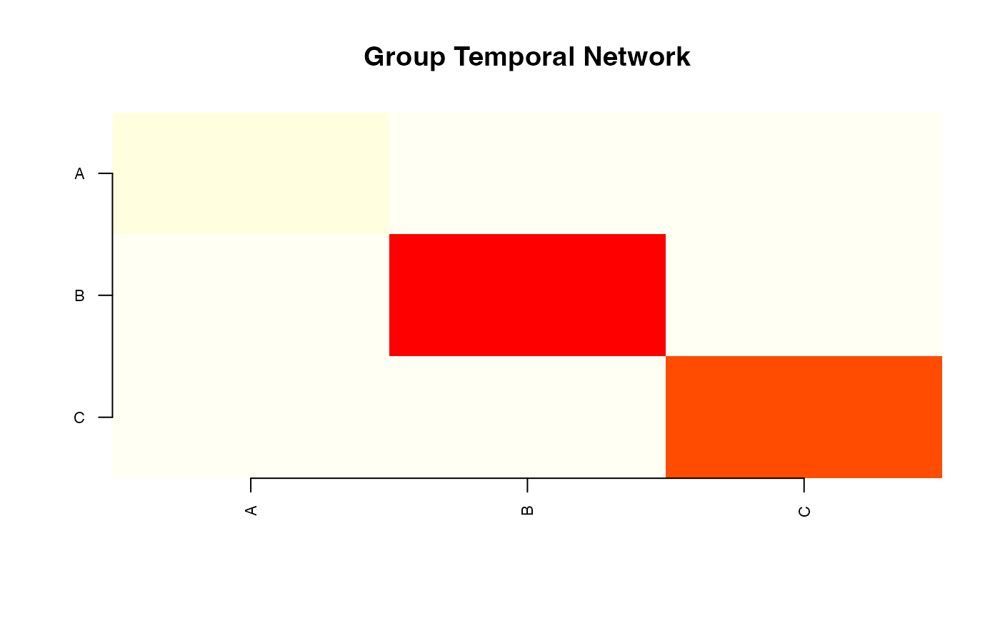

Plot Method for net_gimme
Usage
# S3 method for class 'net_gimme'
plot(
x,
type = c("temporal", "contemporaneous", "individual", "counts", "fit"),
subject = NULL,
...
)
Arguments
- x
A net_gimme object.
- type
Character. Plot type: "temporal", "contemporaneous",
"individual", "counts", or "fit".
- subject
Integer or character. Subject to plot for type = "individual".
- ...
Additional arguments (ignored).
Value
The input object, invisibly.
Examples
# \donttest{
set.seed(1)
panel <- data.frame(
id = rep(1:5, each = 20),
t = rep(seq_len(20), 5),
A = rnorm(100), B = rnorm(100), C = rnorm(100)
)
gm <- build_gimme(panel, vars = c("A","B","C"), id = "id", time = "t")
plot(gm, type = "temporal")

# }